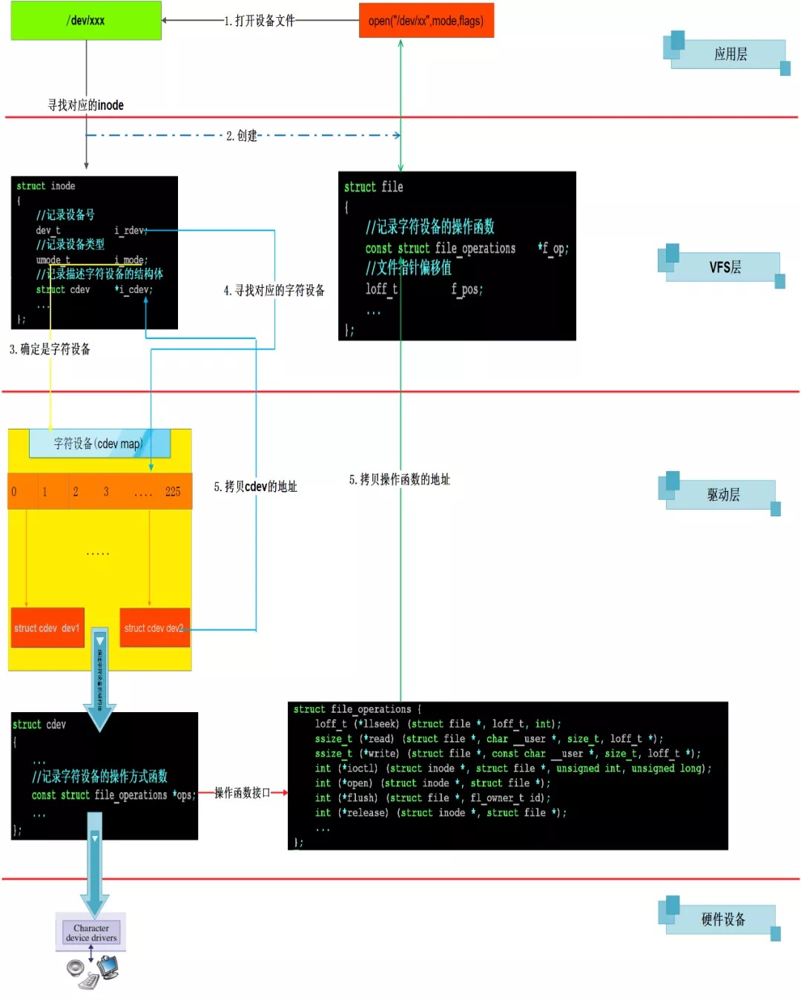

概述
基于 I.MX6ULL 总结 LED 点灯程序, 从阅读硬件手册开始编写驱动程序.
- 本篇总结不同场景下驱动程序编写的步骤。
- Linux 系统下编写驱动程序，最终本质都是操作寄存器, 但需要吃透其驱动框架.
-
- 有点儿类似你写 Web 服务, 可以从 0 开始写一个 Web 服务, 也可以通过框架(比如 python 的 flask 框架)写一个 Web 服务.
Linux 内核层面字符设备框架
1 字符设备架构是如何实现的？
在 Linux 的世界里面一切皆文件，所有的硬件设备操作到应用层都会被抽象成文件的操作。我们知道如果应用层要访问硬件设备，它必定要调用到硬件对应的驱动程序。Linux 内核中有那么多驱动程序，应用层怎么才能精确的调用到底层的驱动程序呢？
在这里我们字符设备为例，来看一下应用程序是如何和底层驱动程序关联起来的。必须知道的基础知识：
1.在 Linux 文件系统中，每个文件都用一个struct inode结构体来描述，这个结构体里面记录了这个文件的所有信息，例如：文件类型，访问权限等。
2.在 Linux 操作系统中，每个驱动程序在应用层的/dev 目录下都会有一个设备文件和它对应，并且该文件会有对应的主设备号和次设备号。
3.在 Linux 操作系统中，每个驱动程序都要分配一个主设备号，字符设备的设备号保存在 struct cdev 结构体中。
struct cdev {
struct kobject kobj;
struct module *owner;
const struct file_operations *ops;//接口函数集合
struct list_head list;//内核链表
dev_t dev; //设备号
unsigned int count；//次设备号个数
};
4.在 Linux 操作系统中，每打开一次文件，Linux 操作系统在VFS层都会分配一个struct file结构体来描述打开的这个文件。该结构体用于维护文件打开权限、文件指针偏移值、私有内存地址等信息。
注意：
常常我们认为struct inode描述的是文件的静态信息，即这些信息很少会改变。而struct file描述的是动态信息，即在对文件的操作的时候，struct file里面的信息经常会发生变化。典型的是struct file结构体里面的f_pos(记录当前文件的位移量）,每次读写一个普通文件时f_ops的值都会发生改变。
这几个结构体关系如下图所示：

通过上图我们可以知道，如果想访问底层设备，就必须打开对应的设备文件。也就是在这个打开的过程中，Linux 内核将应用层和对应的驱动程序关联起来。
1.当 open 函数打开设备文件时，可以根据设备文件对应的 struct inode 结构体描述的信息，可以知道接下来要操作的设备类型（字符设备还是块设备）。还会分配一个 struct file 结构体。
2.根据 struct inode 结构体里面记录的设备号，可以找到对应的驱动程序。这里以字符设备为例。在 Linux 操作系统中每个字符设备有一个 struct cdev 结构体。此结构体描述了字符设备所有的信息，其中最重要一项的就是字符设备的操作函数接口。
3.找到 struct cdev 结构体后，Linux 内核就会将 struct cdev 结构体所在的内存空间首地记录在 struct inode 结构体的 i_cdev 成员中。将 struct cdev 结构体的中记录的函数操作接口地址记录在 struct file 结构体的 f_op 成员中。
4.任务完成，VFS 层会给应用层返回一个文件描述符（fd)。这个 fd 是和 struct file 结构体对应的。接下来上层的应用程序就可以通过 fd 来找到 strut file,然后在由 struct file 找到操作字符设备的函数接口了。
2 字符驱动相关内核 API
概要版本
- 申请设备号:
alloc_chrdev_region() -
占用设备号: ``
-
设备号是dev_t类型, 本质是一个int类型. 该类型前几位代表MAJOR，后几位代表MINOR
MAJOR()和MINOR()---> 这两个宏可以从dev_t类型获取主设备号和次设备号.- 初始化cdev:
cdev_init() - 注册cdev:
cdev_add() class_create()在sysfs中创建类device_create()在devfs中创建设备- 如果使用
register_chrdev()API, 则可以免去cdev_init和cdev_add过程 - register_chrdev如果是入参为0, 则会动态注册设备号dev_t.
- register_chrdev_region是静态注册设备号, 也就是说先人工定义设备号然后用register_chrdev_region去注册. 可能出现失败的情况. 加个判断，出现失败的时候就调用alloc_chrdev_region动态申请设备号.
- register_chrdev内部也会初始化cdev,并进行cdev_add, 然后会调用__register_chrdev_region静态注册设备号. 并且register_chrdev是相对比较老的版本的内核的做法, 理论上现在更加推荐走的新的做法.
详细
cdev_init()
/**
* cdev_init() - initialize a cdev structure
* @cdev: the structure to initialize
* @fops: the file_operations for this device
*
* Initializes @cdev, remembering @fops, making it ready to add to the
* system with cdev_add().
*/
void cdev_init(struct cdev *cdev, const struct file_operations *fops)
功能：
初始化cdev结构体
参数：
@cdev cdev结构体地址
@fops 操作字符设备的函数接口地址
返回值：
无
register_chrdev_region()
/**
* register_chrdev_region() - register a range of device numbers
* @from: the first in the desired range of device numbers; must include
* the major number.
* @count: the number of consecutive device numbers required
* @name: the name of the device or driver.
*
* Return value is zero on success, a negative error code on failure.
*/
int register_chrdev_region(dev_t from, unsigned count, const char *name)
功能：
注册一个范围（)的设备号
参数：
@from 设备号
@count 注册的设备个数
@name 设备的名字
返回值：
成功返回0,失败返回错误码（负数）
cdev_add()
/**
* cdev_add() - add a char device to the system
* @p: the cdev structure for the device
* @dev: the first device number for which this device is responsible
* @count: the number of consecutive minor numbers corresponding to this
* device
*
* cdev_add() adds the device represented by @p to the system, making it
* live immediately. A negative error code is returned on failure.
*/
int cdev_add(struct cdev *p, dev_t dev, unsigned count)
功能：
添加一个字符设备到操作系统
参数：
@p cdev结构体地址
@dev 设备号
@count 次设备号个数
返回值：
成功返回0,失败返回错误码（负数）
cdev_del()
/**
* cdev_del() - remove a cdev from the system
* @p: the cdev structure to be removed
*
* cdev_del() removes @p from the system, possibly freeing the structure
* itself.
*/
void cdev_del(struct cdev *p)
功能：
从系统中删除一个字符设备
参数：
@p cdev结构体地址
返回值：
无
register_chrdev()
static inline int register_chrdev(unsigned int major, const char *name,
const struct file_operations *fops)
功能：
注册或者分配设备号，并注册fops到cdev结构体，
如果major>0，功能为注册该主设备号，
如果major=0，功能为动态分配主设备号。
参数：
@major : 主设备号
@name : 设备名称，执行 cat /proc/devices显示的名称
@fops : 文件系统的接口指针
返回值
如果major>0 成功返回0，失败返回负的错误码
如果major=0 成功返回主设备号，失败返回负的错误码
该函数实现了对cdev的初始化和注册的封装，所以调用该函数之后就不需要自己操作cdev了。
- 相对的注销函数为
unregister_chrdev()
static inline void unregister_chrdev(unsigned int major, const char *name)
3 如何编写字符设备驱动
参考上图，编写字符设备驱动步骤如下：
1. 实现模块加载和卸载入口函数
module_init (hello_init);
module_exit (hello_exit);
2. 申请主设备号
申请主设备号 (内核中用于区分和管理不同字符设备)
register_chrdev_region (devno, number_of_devices, "hello");
3. 创建设备节点
创建设备节点文件 (为用户提供一个可操作到文件接口--open()) 创建设备节点有两种方式：手动方式创建，函数自动创建。
3.1 手动创建：
mknod /dev/hello c 250 0
3.2 自动创建设备节点(udev 机制)
除了使用 mknod 命令手动创建设备节点，还可以利用 linux 的 udev、mdev 机制，
busybox 会创建一个 udev 的简化版本--mdev
而我们的 ARM 开发板上移植的 busybox 有 mdev 机制，那么就使用 mdev 机制来自动创建设备节点。
在 etc/init.d/rcS 文件里有一句：
echo /sbin/mdev > /proc/sys/kernel/hotplug
该命令就是用来自动创建设备节点。
udev 是一个工作在用户空间的工具，它能根据系统中硬件设备的状态动态的更新设备文件，包括设备文件的创建，删除，权限等。这些文件通常都定义在/dev 目录下，但也可以在配置文件中指定。udev 必须有内核中的 sysfs 和 tmpfs 支持，sysfs 为 udev 提供设备入口和 uevent 通道，tmpfs 为 udev 设备文件提供存放空间。
udev 运行在用户模式，而非内核中。udev 的初始化脚本在系统启动时创建设备节点，并且当插入新设备——加入驱动模块——在 sysfs 上注册新的数据后，udev 会创新新的设备节点。
注意，udev 是通过对内核产生的设备文件修改，或增加别名的方式来达到自定义设备文件的目的。但是，udev 是用户模式程序，其不会更改内核行为。也就是说，内核仍然会创建 sda，sdb 等设备文件，而 udev 可根据设备的唯一信息来区分不同的设备，并产生新的设备文件（或链接）。
3.3 如何在/sys 虚拟文件系统下创建设备分类
- 第一步 ：通过宏
class_create()创建一个 class 类型的对象；
/* This is a #define to keep the compiler from merging different
* instances of the __key variable */
#define class_create(owner, name) \
({ \
static struct lock_class_key __key; \
__class_create(owner, name, &__key); \
})
参数：
@owner THIS_MODULE
@name 类名字
返回值
可以定义一个struct class的指针变量cls接受返回值，然后通过IS_ERR(cls)判断
是否失败，如果成功这个宏返回0，失败返回非9值（可以通过PTR_ERR(cls)来获得
失败返回的错误码）
在 Linux 内核中，把设备进行了分类，同一类设备可以放在同一个目录下，该函数启示就是创建了一个类，例如：
- 第二步：导出我们的设备信息到用户空间
/**
* device_create - creates a device and registers it with sysfs
* @class: pointer to the struct class that this device should be registered to
* @parent: pointer to the parent struct device of this new device, if any
* @devt: the dev_t for the char device to be added
* @drvdata: the data to be added to the device for callbacks
* @fmt: string for the device's name
*
* This function can be used by char device classes. A struct device
* will be created in sysfs, registered to the specified class.
*
* A "dev" file will be created, showing the dev_t for the device, if
* the dev_t is not 0,0.
* If a pointer to a parent struct device is passed in, the newly created
* struct device will be a child of that device in sysfs.
* The pointer to the struct device will be returned from the call.
* Any further sysfs files that might be required can be created using this
* pointer.
*
* Returns &struct device pointer on success, or ERR_PTR() on error.
*
* Note: the struct class passed to this function must have previously
* been created with a call to class_create().
*/
struct device *device_create(struct class *class, struct device *parent,
dev_t devt, void *drvdata, const char *fmt, ...)
自动创建设备节点使用实例：
static struct class *cls;
static struct device *test_device;
devno = MKDEV(major,minor);
cls = class_create(THIS_MODULE,"helloclass");
if(IS_ERR(cls))
{
unregister_chrdev(major,"hello");
return result;
}
test_device = device_create(cls,NULL,devno,NULL,"hellodevice");
if(IS_ERR(test_device ))
{
class_destroy(cls);
unregister_chrdev(major,"hello");
return result;
}
4. 实现 file_operations
static const struct file_operations fifo_operations = {
.owner = THIS_MODULE,
.open = dev_fifo_open,
.read = dev_fifo_read,
.write = dev_fifo_write,
.unlocked_ioctl = dev_fifo_unlocked_ioctl,
};
关于 ioctl 的展开
(1)为什么要实现 xxx_ioctl ?
前面我们在驱动中已经实现了读写接口，通过这些接口我们可以完成对设备的读写。但是很多时候我们的应用层工程师除了要对设备进行读写数据之外，还希望可以对设备进行控制。例如:针对串口设备，驱动层除了需要提供对串口的读写之外，还需提供对串口波特率、奇偶校验位、终止位的设置，这些配置信息需要从应用层传递一些基本数据，仅仅是数据类型不同。
通过 xxx_ioctl 函数接口，可以提供对设备的控制能力,增加驱动程序的灵活性。
(2)如何实现 xxx_ioctl 函数接口?
增加 xxx_ioctl 函数接口，应用层可以通过 ioctl 系统调用，根据不同的命令来操作 dev_fifo。
kernel 2.6.35 及之前的版本中 struct file_operations 一共有 3 个 ioctl ：ioctl,unlocked_ioctl 和 compat_ioctl 现在只有 unlocked_ioctl 和 compat_ioctl 了
在 kernel 2.6.36 中已经完全删除了 struct file_operations 中的 ioctl 函数指针，取而代之的是 unlocked_ioctl 。
· 2.6.36 之前的内核
long (ioctl) (struct inode node ,struct file* filp, unsigned int cmd,unsigned long arg)
· 2.6.36 之后的内核
long (*unlocked_ioctl) (struct file *filp, unsigned int cmd, unsigned long arg)
参数 cmd: 通过应用函数 ioctl 传递下来的命令
先来看看应用层的 ioctl 和驱动层的 xxx_ioctl 对应关系:

5. 注册 cdev
定义好file_operations结构体，就可以通过函数cdev_init()、cdev_add()注册字符设备驱动了。
实例如下：
static struct cdev cdev;
cdev_init(&cdev,&hello_ops);
error = cdev_add(&cdev,devno,1);
注意如果使用了函数
register_chrdev(),就不用了执行上述操作，因为该函数已经实现了对 cdev 的封装。
4 如何编写字符设备驱动整体视图
5 代码示例
好了，现在我们可以来实现一个完整的字符设备框架的实例，包括打开、关闭、读写、ioctrl、自动创建设备节点等功能。
#include <linux/init.h>
#include <linux/module.h>
#include <linux/cdev.h>
#include <linux/fs.h>
#include <linux/device.h>
#include <linux/slab.h>
#include <asm/uaccess.h>
#include "dev_fifo_head.h"
//指定的主设备号
#define MAJOR_NUM 250
//自己的字符设备
struct mycdev
{
int len;
unsigned char buffer[50];
struct cdev cdev;
};
MODULE_LICENSE("GPL");
//设备号
static dev_t dev_num = {0};
//全局gcd
struct mycdev *gcd;
//设备类
struct class *cls;
//获得用户传递的数据，根据它来决定注册的设备个数
static int ndevices = 1;
module_param(ndevices, int, 0644);
MODULE_PARM_DESC(ndevices, "The number of devices for register.\n");
//打开设备
static int dev_fifo_open(struct inode *inode, struct file *file)
{
struct mycdev *cd;
printk("dev_fifo_open success!\n");
//用struct file的文件私有数据指针保存struct mycdev结构体指针
cd = container_of(inode->i_cdev,struct mycdev,cdev);
file->private_data = cd;
return 0;
}
//读设备
static ssize_t dev_fifo_read(struct file *file, char __user *ubuf, size_t
size, loff_t *ppos)
{
int n;
int ret;
char *kbuf;
struct mycdev *mycd = file->private_data;
printk("read *ppos : %lld\n",*ppos);
if(*ppos == mycd->len)
return 0;
//请求大大小 > buffer剩余的字节数 :读取实际记得字节数
if(size > mycd->len - *ppos)
n = mycd->len - *ppos;
else
n = size;
printk("n = %d\n",n);
//从上一次文件位置指针的位置开始读取数据
kbuf = mycd->buffer + *ppos;
//拷贝数据到用户空间
ret = copy_to_user(ubuf,kbuf, n);
if(ret != 0)
return -EFAULT;
//更新文件位置指针的值
*ppos += n;
printk("dev_fifo_read success!\n");
return n;
}
//写设备
static ssize_t dev_fifo_write(struct file *file, const char __user *ubuf,size_t size, loff_t *ppos)
{
int n;
int ret;
char *kbuf;
struct mycdev *mycd = file->private_data;
printk("write *ppos : %lld\n",*ppos);
//已经到达buffer尾部了
if(*ppos == sizeof(mycd->buffer))
return -1;
//请求大大小 > buffer剩余的字节数(有多少空间就写多少数据)
if(size > sizeof(mycd->buffer) - *ppos)
n = sizeof(mycd->buffer) - *ppos;
else
n = size;
//从上一次文件位置指针的位置开始写入数据
kbuf = mycd->buffer + *ppos;
//拷贝数据到内核空间
ret = copy_from_user(kbuf, ubuf, n);
if(ret != 0)
return -EFAULT;
//更新文件位置指针的值
*ppos += n;
//更新dev_fifo.len
mycd->len += n;
printk("dev_fifo_write success!\n");
return n;
}
//linux 内核在2.6以后，已经废弃了ioctl函数指针结构，取而代之的是
long dev_fifo_unlocked_ioctl(struct file *file, unsigned int cmd,
unsigned long arg)
{
int ret = 0;
struct mycdev *mycd = file->private_data;
if(_IOC_TYPE(cmd)!=DEV_FIFO_TYPE){
pr_err("cmd %u,bad magic 0x%x/0x%x.\n",cmd,_IOC_TYPE(cmd),DEV_FIFO_TYPE);
return-ENOTTY;
}
if(_IOC_DIR(cmd)&_IOC_READ)
ret=!access_ok(VERIFY_WRITE,(void __user*)arg,_IOC_SIZE(cmd));
else if( _IOC_DIR(cmd)&_IOC_WRITE )
ret=!access_ok(VERIFY_READ,(void __user*)arg,_IOC_SIZE(cmd));
if(ret){
pr_err("bad access %ld.\n",ret);
return-EFAULT;
}
switch(cmd)
{
case DEV_FIFO_CLEAN:
printk("CMD:CLEAN\n");
memset(mycd->buffer, 0, sizeof(mycd->buffer));
break;
case DEV_FIFO_SETVALUE:
printk("CMD:SETVALUE\n");
mycd->len = arg;
break;
case DEV_FIFO_GETVALUE:
printk("CMD:GETVALUE\n");
ret = put_user(mycd->len, (int *)arg);
break;
default:
return -EFAULT;
}
return ret;
}
//设备操作函数接口
static const struct file_operations fifo_operations = {
.owner = THIS_MODULE,
.open = dev_fifo_open,
.read = dev_fifo_read,
.write = dev_fifo_write,
.unlocked_ioctl = dev_fifo_unlocked_ioctl,
};
//模块入口
int __init dev_fifo_init(void)
{
int i = 0;
int n = 0;
int ret;
struct device *device;
gcd = kzalloc(ndevices * sizeof(struct mycdev), GFP_KERNEL);
if(!gcd){
return -ENOMEM;
}
//设备号 : 主设备号(12bit) | 次设备号(20bit)
dev_num = MKDEV(MAJOR_NUM, 0);
//静态注册设备号
ret = register_chrdev_region(dev_num,ndevices,"dev_fifo");
if(ret < 0){
//静态注册失败，进行动态注册设备号
ret =alloc_chrdev_region(&dev_num,0,ndevices,"dev_fifo");
if(ret < 0){
printk("Fail to register_chrdev_region\n");
goto err_register_chrdev_region;
}
}
//创建设备类
cls = class_create(THIS_MODULE, "dev_fifo");
if(IS_ERR(cls)){
ret = PTR_ERR(cls);
goto err_class_create;
}
printk("ndevices : %d\n",ndevices);
for(n = 0;n < ndevices;n ++)
{
//初始化字符设备
cdev_init(&gcd[n].cdev,&fifo_operations);
//添加设备到操作系统
ret = cdev_add(&gcd[n].cdev,dev_num + n,1);
if (ret < 0)
{
goto err_cdev_add;
}
//导出设备信息到用户空间(/sys/class/类名/设备名)
device = device_create(cls,NULL,dev_num +n,NULL,"dev_fifo%d",n);
if(IS_ERR(device)){
ret = PTR_ERR(device);
printk("Fail to device_create\n");
goto err_device_create;
}
}
printk("Register dev_fito to system,ok!\n");
return 0;
err_device_create:
//将已经导出的设备信息除去
for(i = 0;i < n;i ++)
{
device_destroy(cls,dev_num + i);
}
err_cdev_add:
//将已经添加的全部除去
for(i = 0;i < n;i ++)
{
cdev_del(&gcd[i].cdev);
}
err_class_create:
unregister_chrdev_region(dev_num, ndevices);
err_register_chrdev_region:
return ret;
}
void __exit dev_fifo_exit(void)
{
int i;
//删除sysfs文件系统中的设备
for(i = 0;i < ndevices;i ++)
{
device_destroy(cls,dev_num + i);
}
//删除系统中的设备类
class_destroy(cls);
//从系统中删除添加的字符设备
for(i = 0;i < ndevices;i ++)
{
cdev_del(&gcd[i].cdev);
}
//释放申请的设备号
unregister_chrdev_region(dev_num, ndevices);
return;
}
module_init(dev_fifo_init);
module_exit(dev_fifo_exit);
头文件内容:
dev_fifo_head.h
#ifndef _DEV_FIFO_HEAD_H
#define _DEV_FIFO_HEAD_H
#define DEV_FIFO_TYPE 'k'
#define DEV_FIFO_CLEAN _IO(DEV_FIFO_TYPE,0x10)
#define DEV_FIFO_GETVALUE _IOR(DEV_FIFO_TYPE,0x11,int)
#define DEV_FIFO_SETVALUE _IOW(DEV_FIFO_TYPE,0x12,int)
#endif
Makefile :
ifeq ($(KERNELRELEASE),)
KERNEL_DIR ?=/lib/modules/$(shell uname -r)/build
PWD :=$(shell pwd)
modules:
$(MAKE) -C $(KERNEL_DIR) M=$(PWD) modules
.PHONY:modules clean
clean:
$(MAKE) -C $(KERNEL_DIR) M=$(PWD) clean
else
obj-m := dev_fifo.o
endif
应用程序:
#include <stdio.h>
#include <stdlib.h>
#include <sys/types.h>
#include <string.h>
#include <sys/stat.h>
#include <fcntl.h>
int main(int argc, const char *argv[])
{
int fd ;
int n;
char buf[1024] = "hello word";
fd = open("/dev/dev_fifo0",O_RDWR);
if(fd < 0){
perror("Fail ot open");
return -1;
}
printf("open successful ,fd = %d\n",fd);
n = write(fd,buf,strlen(buf));
if(n < 0){
perror("Fail to write");
return -1;
}
printf("write %d bytes!\n",n);
n = write(fd,buf,strlen(buf));
if(n < 0){
perror("Fail to write");
return -1;
}
printf("write %d bytes!\n",n);
return 0;
}
测试步骤：
- （1） 加载模块
sudo insmod hello.ko
- （2） 创建设备节点
sudo mknod /dev/hello c 250 0
如果代码中增加了自动创建设备节点的功能，这个步骤不要执行。
- （3） 测试字符设备
gcc test.c -o run
sudo ./run